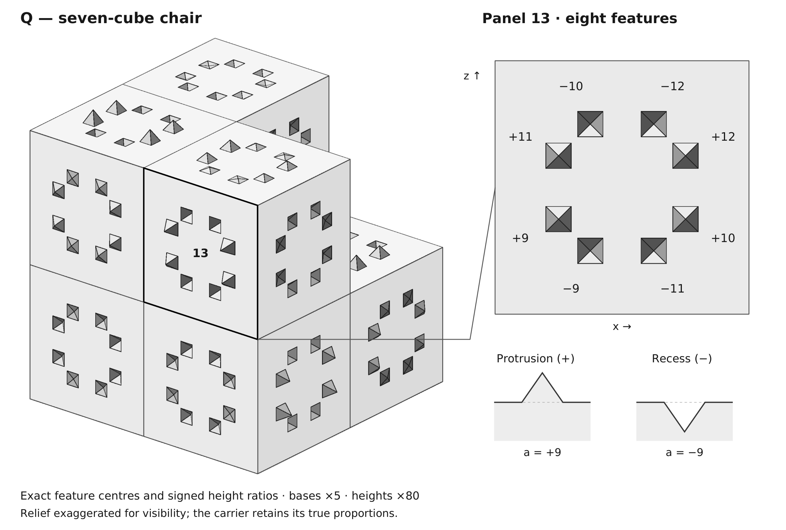

The finite gates, geometric lemmas, and logical assembly proving a strongly aperiodic 3D monotile are kernel-checked in Lean 4 with Mathlib.
Abstract
Socolar and Taylor asked for a single, simply connected three-dimensional prototile that forces nonperiodicity by shape alone, admitting no weakly nonperiodic tiling; the Schmitt-Conway-Danzer biprism and the three-dimensional Socolar-Taylor tile admit screw motions or a periodic stacking direction. We exhibit a rational polyhedral $3$-ball $Q$, which we call Chair44 (R44): a seven-cube chair whose $24$ exposed unit panels carry tiny square-pyramid features, and prove, as a proof submission, that $Q$ admits tilings of $\mathbb{R}^3$ by congruent copies, reflections allowed, and that every such tiling has no translational period and a symmetry group of order at most $24$; every tiling is homochiral and carries a unique infinite hierarchy of nested supertiles. The solid was designed to a reading of the aperiodic-monotile phenomenon reached with the Six Birds emergence calculus (Section 3.3), and the construction turns on a single finite test, checked by machine: the tile's own contact rule survives coarsening, so that the decoded parent tiling obeys the tile's rule and no other. The proof combines a written geometric argument, that the features force every tiling onto a registered lattice, with exhaustive finite enumerations; the companion census is replayed by two independent implementations, every finite gate is kernel-checked in Lean 4 (modulo a named compiler hook per native_decide theorem), and the written geometric lemmas and the logical assembly are Lean theorems as well, so that the theorem is kernel-checked modulo the named compiler hooks; the written proofs remain as exposition.
Problem
Socolar and Taylor asked for a single simply connected 3D prototile that forces nonperiodicity by shape alone, admitting no weakly nonperiodic tiling. Prior candidates admitted screw motions or periodic stacking directions.
Approach
A rational polyhedral 3-ball Q (Chair44), a seven-cube chair with 24 exposed panels carrying small square-pyramid features, is constructed. A written geometric argument shows features force every tiling onto a registered lattice, combined with exhaustive finite enumerations. Every finite gate is kernel-checked in Lean 4 (with named native_decide compiler hooks per theorem), and the geometric lemmas and logical assembly are Lean theorems using Mathlib.

Figure 1. The solid Q , with feature bases enlarged \times 5 and signed heights \times 80 for visibility. The seven-cube carrier, feature centres, polarities and relative heights are preserved. The outlined panel 13 and its inset show the same eight features; signed labels give a , whose true height is a/10000 (positive for a protrusion, negative for a recess). The sections illustrate its +9 and -
Results
Q admits tilings of R^3 by congruent copies (reflections allowed), every tiling has trivial translational period, symmetry group of order at most 24, is homochiral, and carries a unique infinite hierarchy of nested supertiles, making Q a strongly aperiodic 3D monotile. The main theorem r44_einstein depends only on three standard Mathlib axioms plus 21 named compiler hooks, with no sorry.
theorem
statement
method
children_partition_2P
eight child poses partition doubled chair
kernel decide
contact_closure_30
refining 21 contacts gives 30-state certificate
native_decide
atlas_44
admitted parent atlas of 44 poses
native_decide
Sample Lean finite theorems and their decision method